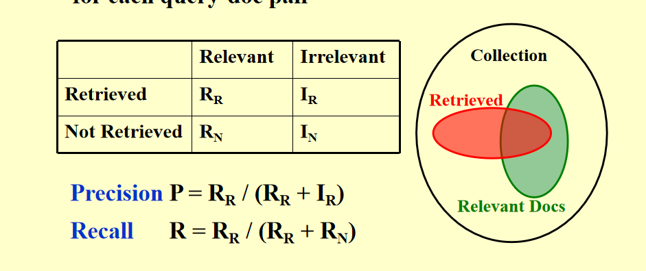

Lesson3：倒排索引
倒排索引
定义了一个概念"索引"：Index is a mechanism for locating a given term in a text.
翻译一下就是"索引"定位特定词再文章中的位置。
一张示例图看懂，转变方式不就是转换为"序号|词|文档(包括次数与哪些文档、文档内位置等)"
// Index generator
while ( read a document D ) { // 读文档
while ( read a term T in D ) { // 读每个词
if ( Find( Dictionary, T ) == false )
Insert( Dictionary, T ); // 不在字典里就肘进字典
Get T’s posting list; // 获取术语的倒排列表
Insert a node to T’s posting list; // 将文档信息插入倒排列表
}
}
Write the inverted index to disk; // 写入磁盘
要裁剪词语，就剩一个词根
有些词出现得太频繁了，可以忽略(停用词，比如the a an)
// 孩子们，我没内存了.jpg
BlockCnt = 0;
while ( read a document D ) {
while ( read a term T in D ) {
if ( out of memory ) {
Write BlockIndex[BlockCnt] to disk;
BlockCnt ++;
FreeMemory; // 内存满就先存，其他一样
}
if ( Find( Dictionary, T ) == false )
Insert( Dictionary, T );
Get T’s posting list;
Insert a node to T’s posting list;
}
}
for ( i=0; i<BlockCnt; i++ )
Merge( InvertedIndex, BlockIndex[i] );
分散式索引
-
Term-partitioned index: 多台电脑处理不同开头单词，如分别处理
A-D,E-H等，它需要检查所有文档。 -
Document-partitioned index: 多台电脑处理文档，每个电脑分一点文档，需要检查其中所有的单词。
就是按什么分呗，按词(term)还是按文档(document)。
更常用的是第二种，因为万一某个节点崩溃了用户也不一定看得出来。(草)
动态索引：文档随着时间的推移不断更新
- 对已经在字典中的术语进行更新
- 向字典中添加新术语
- 文档被删除
压缩
差分压缩，即之前存储的是直接存储的值，现在修改为二者之间的差值。
压缩的是某个关键词的链表
e.g. 第一个数字为文档编号
computer -> [1,2] -> [3,30] -> [13,20]
差分压缩后
computer -> [1,2] -> [2,30] -> [10,20]
感谢yelan老师友情提供的样例。
阈值化
权重阈值
即通过某些算法，根据输入计算出一个权重，只有高于阈值的会被保存。
这个阈值可能是静态的(即设定为定值)或动态的(根据排名实现)
弊端在于不支持布尔查询(即有则1无则0，不关心权重)也可能因为算法的问题导致一些重要的文档被忽略。
查询阈值
我觉得有点类似于上一个的对象改为词，计算词的频率。
-
按词频排序：将查询中的关键词按在文档集合中的词频从低到高排序。词频低的词更可能区分出相关文档，而高频词可能会带来大量无关文档。
-
按比例筛选查询词：按词频的比例筛选一部分词，而不是使用全部的查询词。PPT例子按比例分为 20%、40%、80%，逐步增加筛选的词。
user happiness 用户幸福感(满意度)
用户幸福感的衡量标准主要包括两个方面：数据检索性能评估和信息检索性能评估。
- 数据检索性能评估 (Data Retrieval Performance Evaluation)评估的指标主要包括：
- 响应时间（Response Time）：检索系统返回结果所需要的时间，越快越好。
- 索引空间（Index Space）：为了提高检索效率，系统需要构建索引。评估索引占用的存储空间，空间越小越好。
- 信息检索性能评估 (Information Retrieval Performance Evaluation)除了数据检索的性能外，还需要考虑查询的相关性（Relevance）：
查询结果的相关性（How relevant is the answer set）：检索到的结果是否满足用户的需求，检索结果的质量至关重要。即，检索到的结果与用户查询的需求、意图的匹配程度。 总结： 数据检索主要关心速度和效率。信息检索不仅关注速度和效率，还关注返回结果的相关性。用户幸福感是两者的结合，系统需要平衡速度、存储空间和结果的相关性，才能最大化用户的满意度。
相关性度量需要三个要素： + 基准文档集合 (Benchmark Document Collection) 这是一个预先定义的文档集合，作为评估信息检索系统性能的标准。这些文档通常是从特定领域或主题中选取的，并且在评估过程中保持不变，用来与查询结果进行对比。
-
基准查询集 (Benchmark Suite of Queries) 这是一个预先设定的查询集合，通常包含多个不同类型的问题，能够代表用户可能提出的各种检索需求。每个查询都用来检索基准文档集合中的相关文档，从而评估检索系统的表现。
-
查询-文档对的二元评估 (Binary Assessment of Either Relevant or Irrelevant for Each Query-Document Pair) 这是对每个查询和文档对的相关性进行评估的过程，通常是二元的——每个查询-文档对要么是“相关” (Relevant)，要么是“不相关” (Irrelevant)。通过人工标注或自动化评估，判断一个特定的文档是否满足用户查询的需求。

精确度描述所有已经获得的文档中，相关文档的比例。
召回率描述所有相关文档中，已经获得的文档的比例。